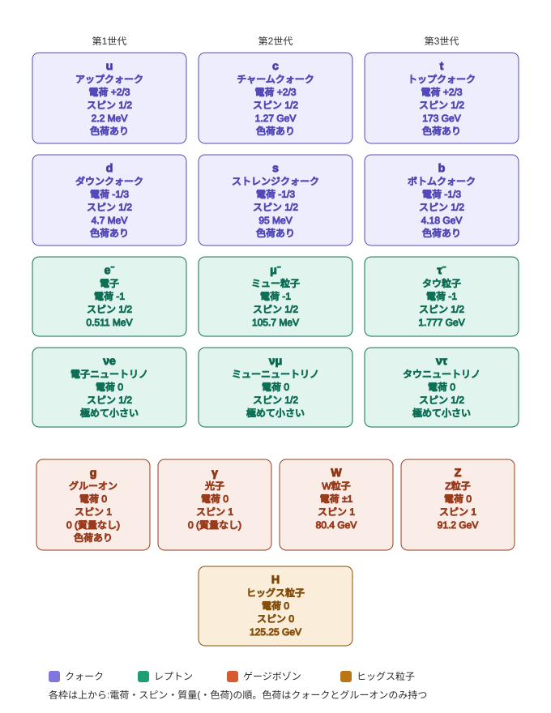

概要：この宇宙を構成する素粒子の現代物理学の基本理論。
標準理論では、粒子を大きく「物質を構成する粒子」と「力を媒介する粒子」の2つに分類。それに質量を与える「ヒッグス粒子」を加えた合計17種類の素粒子で成り立つ。
物質を形作る基本的な粒子で、それぞれ6種類の「クォーク」と「レプトン」に分かれる。
素粒子間に働く3つの力を伝える役割を持つ。
すべての素粒子に質量を与える起源とされる粒子。2012年に欧州原子核研究機構（CERN）の実験でその存在が確認された。
自然界には4つの基本的な力があるが、標準理論は重力を除く3つの力を量子力学的に記述。
